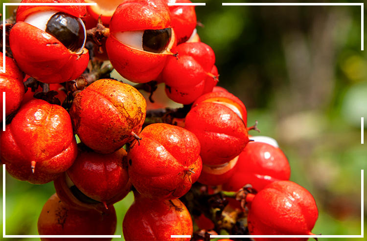
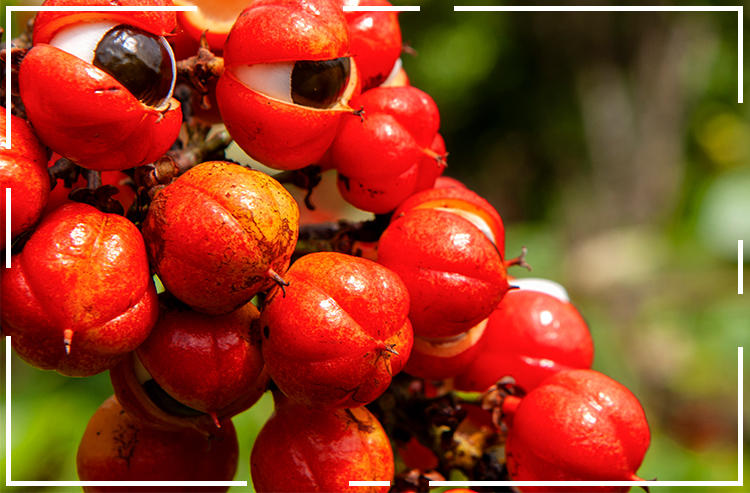

Sobre a Criação do Site
Em um mundo cada vez mais conectado, sentimos a necessidade de criar um espaço que não apenas informe, mas também conecte as pessoas. Este site nasceu da paixão por compartilhar conhecimentos sobre os diversos estados brasileiros, suas culturas ricas e suas belezas naturais.
Nossa missão é proporcionar uma plataforma onde todos possam explorar, aprender e se inspirar. Acreditamos que conhecer mais sobre as regiões do nosso país nos torna cidadãos mais conscientes e conectados. Cada clique aqui é uma oportunidade de descobrir algo novo e celebrar a diversidade que nos une.
Com um design intuitivo e acessível, buscamos facilitar a navegação e garantir que cada visitante tenha uma experiência agradável. Junte-se a nós nessa jornada de descoberta e valorização do Brasil!
 

Como o Site Foi Feito
O desenvolvimento deste site utilizou algumas das principais tecnologias de construção de websites. Nossa equipe se dedicou a criar uma plataforma eficiente e de fácil navegação, aproveitando as melhores práticas de design e desenvolvimento web.
HTML (HyperText Markup Language)
HTML é a espinha dorsal do site. É o que utilizamos para estruturar o conteúdo, definir títulos, parágrafos, imagens e links. Cada página foi cuidadosamente planejada com HTML para garantir que os usuários tenham uma experiência clara e organizada ao navegar.
CSS (Cascading Style Sheets)
CSS foi utilizado para dar vida ao design. Com ele, personalizamos cores, espaçamentos, fontes e layout de cada página. Além disso, usamos técnicas modernas de design responsivo para garantir que o site funcione bem em dispositivos móveis, tablets e computadores.
JavaScript
JavaScript entra em cena para melhorar a interatividade. Com ele, adicionamos dinamismo ao site, como animações, interações com o usuário e manipulação de dados em tempo real. É uma linguagem essencial para criar funcionalidades que tornam a navegação mais interessante e eficiente.
Todo o projeto foi desenvolvido com cuidado para garantir que o site fosse rápido, acessível e fácil de usar, atendendo às necessidades de um público diversificado. Utilizamos ferramentas modernas e colaboramos de forma integrada para garantir que cada detalhe fosse ajustado.